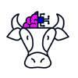

Creative Problem Solver
Building meaningful digital experiences through thoughtful design and clean code.
View My Work
What I Do
Web Design
Creating visually appealing and user-friendly interfaces that communicate effectively and engage visitors.
Development
Transforming designs into responsive, accessible websites using modern HTML, CSS, and best practices.
Strategy
Planning user experiences that align with goals, ensuring every element serves a purpose.
Featured Project
This capstone project showcases my ability to research user needs, design intuitive interfaces, and build accessible web solutions. The project involved conducting user interviews, creating wireframes, and developing a fully responsive website that improved task completion rates by focusing on clear navigation and content hierarchy.
More About Me
Education
Currently pursuing studies in Information Science, where I combine technical skills with a deep understanding of how people interact with information systems.
 Learn more about my background
Learn more about my background
Interests
Beyond academics, I enjoy exploring new technologies, contributing to open-source projects, and staying current with design trends through online communities.
 Connect with meLet's Work Together
Have a project in mind or want to collaborate? I would love to hear from you.
Get In Touch